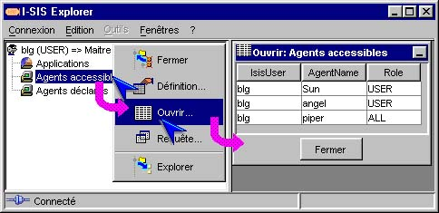

I-SIS Explorer

Guide d'utilisation
|
|
I-SIS Explorer |
|
|
Guide d'utilisation |
||
Depuis son nœud, une table est affichable sous forme de tableau, par le biais de la méthode "Ouvrir...". L'affichage peut-être limité au contexte de la session courante (utilisateur, I-SIS Agent, service...), suivant les conditions de la requête exécutée (suivant le parcours d'exploration).
Pointez un nœud table,
Affichez le menu contextuel avec le bouton droit de la souris,
Cliquez sur "Ouvrir...",
La table est affichée sous forme de tableau dans une sous-fenêtre du volet droit de I-SIS Explorer.

Copyright © 2003 BV Associates. Tous droits réservés.